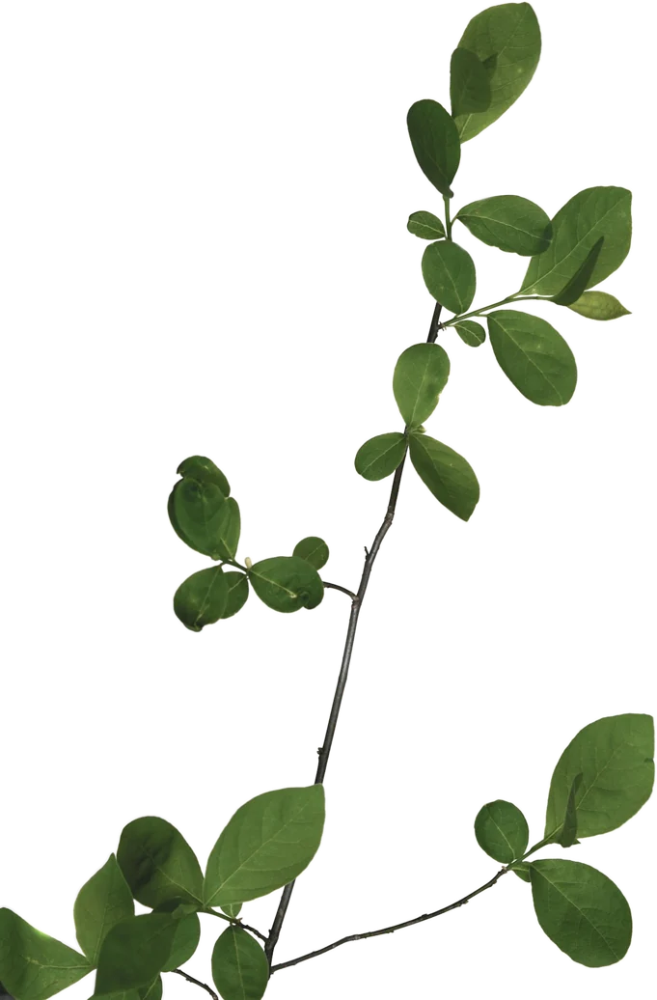

THEMES
経歴・役職・資格・段位。森一真がどんな人かをひと目で。
くわしく見る 02 RESEARCH「おはよう」ボタンで独居高齢者を見守る、10年続く地域研究。
くわしく見る 03 SCS学生団体SCSの代表として、団地サロンや子どもの居場所へ。
くわしく見る 04 COMMUNITYDAOのモデレーター、えびすFMのラジオパーソナリティ。
くわしく見る 05 OUTREACH中高生への出張授業、学会発表、地域での健康講演。
くわしく見る 06 AWARDSCSO志支援金、国際ソロプチミスト表彰、大臣からの手紙ほか。
くわしく見る 07 HOBBIES切り絵(美術館展示)・詩吟1級・少林寺拳法初段・笑い文字。
くわしく見る 08 CREATIVEGREEN VIBES CHANNEL運営、ショート動画編集、Kindle・note。
くわしく見るGALLERY


CONTACT
研究・地域活動、講演・取材、制作のご依頼など、メールまたはSNSのDMにてお気軽にご連絡ください。
24時間以内の返信を心がけています。
佐賀大学 医学部(〒849-0937 佐賀県佐賀市鍋島5-1-1)
TEL 0952-31-6511